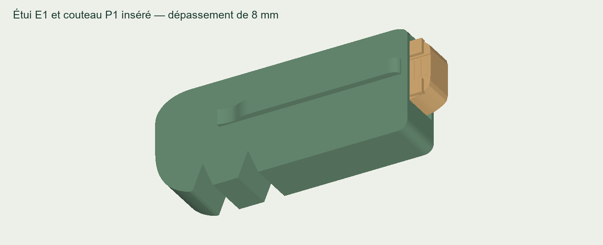
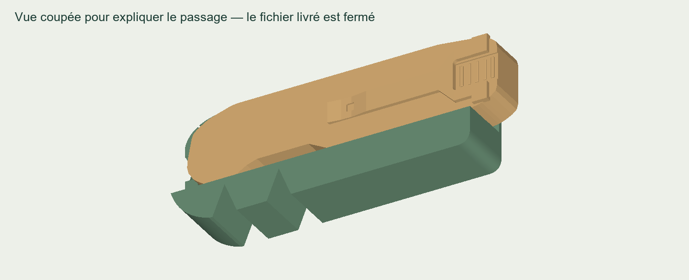

À transmettre à l’imprimeuse
Envoyez-lui cette page. Le paquet contient l’étui en STL et 3MF, une fiche d’une page et un petit gabarit facultatif pour vérifier l’ajustement.
Environ 190 Ko. Le couteau n’est pas inclus : cet étui est conçu pour le modèle P1 déjà transmis.
Le couteau pourra-t-il entrer ?
Le passage a été dimensionné avec le fichier P1 exact, y compris sa clip remplie. Il laisse 0,6 mm de jeu de chaque côté. L’entrée est légèrement évasée; le bout du couteau reste accessible sur 8 mm.
Le contrôle numérique ne trouve aucune collision sur 455 positions d’insertion et de retrait. Le résultat sur les vraies pièces dépend aussi de l’impression : le petit gabarit permet de vérifier le jeu avant de faire l’étui complet.

La coupe sert uniquement à montrer l’intérieur. Le fichier livré possède bien sa coque complète.
Un petit essai avant le grand
Le fichier 02 — Gabarit facultatif est une section traversante de 12 mm. L’imprimeuse peut l’essayer sur votre P1 réel, clip comprise. Si ça serre, il faut ajuster le passage plutôt que forcer ou agrandir tout le modèle.
Estimations génériques : gabarit ≈ 6 g / 33 min; étui ≈ 56 g / 5 h 01, bordures et supports compris. L’atelier confirme ses réglages, ses délais et son prix.
Une maquette sans mécanisme
L’étui est creux et se tient d’un seul bloc. Il n’a pas de verrou : le couteau peut glisser dehors si on le retourne. La clip d’étui est fixe; les formes d’affûteurs sont décoratives et la tige ne se déplie pas.
Les fichiers sont déjà orientés pour imprimer l’ouverture vers le haut. Imports STL/3MF et tranchages réussis dans PrusaSlicer 2.9.2. L’imprimeuse utilise son profil machine, prépare les supports extérieurs et nettoie le passage. Aucun essai physique réalisé à ce jour.
Fichiers individuels pour l’atelier
Étui complet · 3MF en millimètres
Choisir un seul format par pièce. Imprimer à 100 %, en millimètres.